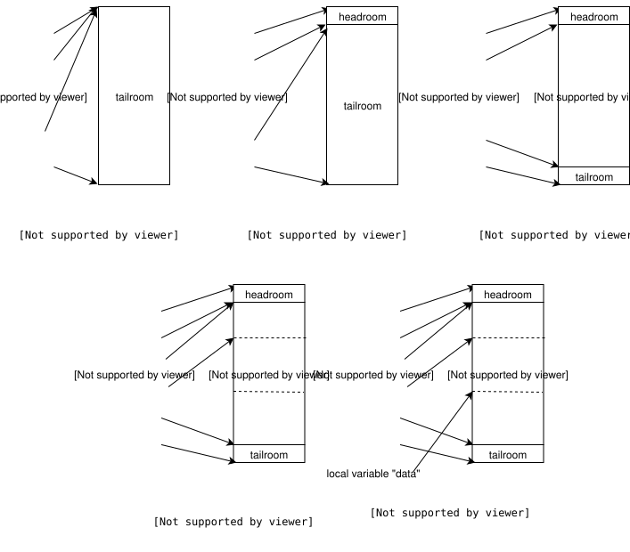

INDEX Toggle Sections Open All Sections Collapse All Sections
This page contains the basic code flow while transmitting a packet. It begins with the userspace sendmsg, enters the UDP and IP stacks, finds a route, enters core networking and finally being handed over to the driver which pushes it out. TX, unlike RX, can happen without a softirq being raised. The processing happens completely in the application context. In this page I describe packet transmission without a softirq being raised. I'll cover how qdiscs are used in a separate page, after which NET_TX with qdiscs will be described.
UDP & IP stack processing and routing will be described in detail in a separate page, this is just a basic overview. We will end the discussion by handling over the packet to the driver. How the driver actually transmits the packet will be described in later pages.
After opening a UDP socket the application gets a fd as a handle for the underlying kernel socket. The aplication sends data into the socket by calling send() or sendmsg() or sendto(), all of which will send out UDP data.
On calling the sendmsg() system call, the syscall trap will save the application's process context and switch to running the kernel code. Kernel code runs in the application context, i.e. any traces that print the pid of the process will return the application's pid. If you do not know this, believe me for now, signals & syscalls are explained in a separate page. The kernel registers functions that are run for each system call. The registered function's name is "__do_sys_" + syscall name. In our case the function is __do_sys_sendmsg(), which internally calls __sys_sendmsg(). The arguments passed to the call are the fd, the msghdr struct and flags.
The first step is to get the socket from the fd. Each fd the application is a handle to a kernel socket. The socket can be for an open file, a UDP socket, UNIX socket, etc. The socket is usually represented with the var "sock". ___sys_sendmsg is called with the sock, msghdr and flags. It simply checks if the arguments are valid, copies the mesghdr (allocated in userspace) into kernel memory and then calls sock_sendmsg().
sock_sendmsg() checks if the application is allowed to proceed. Linux has kernel modules like SELinux and AppArmour which audit each system call and based on the configured rules allow or reject the system call. If security_socket_sendmsg() does not return any errors, sock_sendmsg_nosec() is called, which internall calls the sock->ops->sendmsg(). socket ops are registered during socket creation based on the protocol family (AF_INET, AF_INET6, AF_UNIX) and socket type (SOCK_DGRAM, SOCK_STREAM). Since a udp socket is a SOCK_DGRAM socket of AF_INET family the ops registered are inet_dgram_ops, defined in (net/ipv4/af_inet.c). And sock->ops->sendmsg() is inet_sendmsg().
SYSCALL_DEFINE3(sendmsg, int, fd, struct user_msghdr __user *, msg, unsigned int, flags)
{
return __sys_sendmsg(fd, msg, flags) {
sock = sockfd_lookup_light(fd, &err, &fput_needed);
err = ___sys_sendmsg(sock, msg, &msg_sys, flags) {
//copy msg (usr mem) into msg_sys (kernel mem)
err = copy_msghdr_from_user(msg_sys, msg, NULL, &iov);
sock_sendmsg(sock, msg_sys) {
int err = security_socket_sendmsg();
if(err)
return;
sock_sendmsg_nosec(sock, msg_sys) {
sock->ops->sendmsg(sock, msg_sys);
//inet_sendmsg();
}
}
}
}
}
At this point we will begin using the networking struct sock, represented usually with the var "sk". Each socket will either have a valid sock or a file. In our case a sock->sk will contain a valid sock. We check if socket needs to be bound to a ephemeral port, and then call sk->sk_prot->sendmsg(). During socket creation, the sock is added to the socket, and protocol handlers are registered to the sock. In this case, for a UDP socket, sk_prot is set to udp_prot (defined in net/ipv4/udp.c). And sk_prot->sendmsg is set to udp_sendmsg(). The arguments have not changed, we will pass sk and msghdr.
Till this point we have not begun constructing the packet, the focus was more on socket options. udp_sendmsg will first extract the dest address (usually variable "daddr") and dest port (usually port "dport"), from the msghdr->msg_name. The source port is extracted from the sock. This information is passed to find a route for the packet. The first time a packet is sent out of a sock, the route has to be found by going through the routing tables. This route result is saved in sk->sk_dst_cache, which is used for packets that are sent later. At this point the packet's source address is extracted from the route. All the details about the packet's flow are saved in struct flowi4, which are saddr, daddr, sport, dport, protocol, tos (type of service), sock mark, UID (user identifier), etc. We now have all the information, the addresses, ports and certain information to fill in the IP header with. We can begin filling in the packet. ip_make_skb() will create the skb which will be sent out by calling udp_send_skb().
int inet_sendmsg(struct socket *sock, struct msghdr *msg, size_t size)
{
inet_autobind(sk)
DECLARE_SOCKADDR(struct sockaddr_in *, usin, msg->msg_name);
daddr = usin->sin_addr.s_addr; // get daddr from msghdr
dport = usin->sin_port;
rt = (struct rtable *)sk_dst_check(sk, 0);
if (!rt) {
flowi4_init_output();
// pass daadr, dport...
rt = ip_route_output_flow(net, fl4, sk);
sk_dst_set(sk, dst_clone(&rt->dst));
//next time sendmsg is called, sk_dst_check() will return the rt
}
saddr = fl4->saddr; // route lookup complete, saddr is known
skb = ip_make_skb(); // create skb(s)
err = udp_send_skb(skb, fl4, &cork); // send it to ip layer
}
ip_make_skb() is called to create a skb and is provided flowi4, sk, msg ptr,
msg length and route as the arguments. This is a generic function that can
be called from any tranport layer, here UDP calls it and the argument
tranhdrlen (transport header length) is equal to sizeof an udp header.
Additionally, the length field is equal to the amount of data below the
ip header, i.e. length contains payload length plus udp header length.
A skb queue head is inited, which
contains a list of skbs. Note that a head itself DOES NOT contain data. It
is a handle to a skb list. On init, the list is empty, with sk_buff_head->next
equal to sk_buff_head->prev equal to its own address, and sk_buff_head->qlen
is zero. Multiple skbs will be added to it if the msg size is greater
than the MTU, forcing IP fragmentation. For now, we will ignore ip
fragmentation, so a single skb will be added to it later.
Next __ip_append_data() is called to fill in the queue with the skb(s).
The primary goal of __ip_append_data is to estimate memory necessary for
the packet(s) and accordingly create and enqueue skb(s) into the queue.
The skb needs memory necessary to accommodate:
1. link layer headers: each device during init sets dev->hh_len. Hardware
header length (usually represented by var "hh_len") is the maximim space
the driver will need to fill in header(s)
below the network header. e.g. ethernet header is added by ethernet drivers.
2. IP and UDP headers. The function also handles the case where
the packet needs IP fragmentation. In that case, additional logic to
allocate memory for fragmentation headers is necessary.
3. Payload. Obviously.
Additionally some extra tail space is also
provided while allocating the skb. The allocation logic is shown in the
code below. Once
the calculation is done, sock_alloc_send_skb() is called, which internally
calls sock_alloc_send_pskb() to allocate the skb. Each skb must be accounted
for in the sock where it was created (TX) or in the sock where it is destined
to (RX). This is to control the memory used by packets. Each sock will have
restrictions on the amount of memory it can use. In this case wmem, the amount of
data written into the socket that hasn't transmitted yet, is a constraint
while allocating data. If
wmem is full, sendmsg() call can get blocked (unless the socket is set to
non blocking mode) till sock memory is freed. Once data is allocated, the
udp payload data is written
into the skb. skb->transport_header and skb->network_header are set. IP and
UDP headers haven't been filled yet, but pointers to where they have to be
filled are set.
The skb is added to the skb queue and finally sock wmem is updated.
Next __ip_make_skb() will fill in ip header. (ignore fragmentation
code, which will run if the queue has more than one skb). Finally it
returns the skb pointer.
struct sk_buff *ip_make_skb()
{
struct sk_buff_head queue;
__skb_queue_head_init(&queue);
err = __ip_append_data()
{
hh_len = LL_RESERVED_SPACE(rt->dst.dev);
fragheaderlen = sizeof(struct iphdr) + (opt ? opt->optlen : 0);
// opt is NULL, fragheaderlen is equal to sizeof(struct iphdr)
datalen = length + fraggap; //fraggap is zero
// length = udphdr len + payload length
fraglen = datalen + fragheaderlen;
alloclen = fraglen;
skb = sock_alloc_send_skb(sk,
alloclen + hh_len + 15,
(flags & MSG_DONTWAIT), &err);// ------- Step 0
skb_reserve(skb, hh_len); // -------------------------- Step 1
data = skb_put(skb, fraglen + exthdrlen - pagedlen);
// exthdrlen & pagedlen are zero. --------------------- Step 2
skb_set_network_header(skb, exthdrlen);
skb->transport_header = (skb->network_header +
fragheaderlen); // --------------------- Step 3
data += fragheaderlen + exthdrlen; // ------------------ Step 4
// move pointer to where payload starts
copy = datalen - transhdrlen - fraggap - pagedlen;
// amount of payload data that needs to be copied.
// datalen = payload len + udp header len.
// transhdrlen = udp header len
getfrag(from, data + transhdrlen, offset, copy, fraggap, skb);
// getfrag is set to ip_generic_getfrag()
{ //copy and update csum
csum_and_copy_from_iter_full(to, len, &csum, &msg->msg_iter);
skb->csum = csum_block_add(skb->csum, csum, odd);
}
length -= copy + transhdrlen; // copied length is subtracted
skb->sk = sk;
__skb_queue_tail(queue, skb);
refcount_add(wmem_alloc_delta, &sk->sk_wmem_alloc);
}
return __ip_make_skb(sk, fl4, &queue, cork)
{
skb = __skb_dequeue(queue);
iph = ip_hdr(skb);
iph->version = 4;
iph->ihl = 5;
iph->tos = (cork->tos != -1) ? cork->tos : inet->tos;
iph->frag_off = df;
iph->ttl = ttl;
iph->protocol = sk->sk_protocol;
ip_copy_addrs(iph, fl4); // copy addresses from flow info
}
}
See the figure below which shows how pointers in skb meta data are being updated corresponding to steps commented in the code above. Stole the pictures from davem's skb_data page. which describes udp packet data being filled in a skb, very different from what I have described above. Was that the code in an earlier version? Maybe I have missed something? I am not sure. Comments are welcome.

udp_send_skb() is simple, it fills in the UDP header, computes the checksum, and sends the skb to ip_send_skb(). If ip_send_skb returns an error, SNMP value SNDBUFERRORS is incremented, if everything goes well OUTDATAGRAMS is incremented.
ip_send_skb() calls ip_local_out(), which calls __ip_local_out(). The packet
then enters the OUTPUT chain, at the end of which dst_output() is called.
On finding the packet's route, skb_dst(dst)->output is set to ip_output.
The skb then enters the POSTROUTING chain, at the end of which ip_finish_output()
is called. ip_finish_output() checks if the packet needs fragmentation (in
certain cases, the packet might have modified or the packet route might
change, which may require ip fragmentation). Ignoring the fragmentation,
ip_finish_output2() is called.
transport layer (TCP/UDP)
__ip_local_out()
INPUT OUTPUT
| |
ROUTING DECISION --- FORWARDING --- +
| |
PREROUTING POSTROUTING
| |
ip_finish_output()
CORE NETWORKING
ip_finish_output2() first checks if the interface the packet is being
routed out to has a corresponding neighbour entry. The neighbour subsystem
is how the kernel manages link local connections corresponding to IP
addresses. i.e. ARP to manage ipv4 addresses and NDISC for ipv6 addresses.
If the next hop for an interface is not known, the corresponding messages
are triggered, and is added to the corresponding cache. The current arp
cache can be checked by printing "/proc/net/arp". For now, the assuming
the neigh can be found, we will proceed. neigh_output is called, which
calls neigh_hh_output(). (An output function is registered in the neigh
entry, which will be called if the neigh entry has expired. Ignoring this
for now.)
neigh_hh_output() adds the hardware header necessary into the headroom.
The neigh entry contains a cached hardware header, which is added while
adding a neigh entry into the neigh cache (after a successful ARP resolution
or neighbour discovery) is complete. More of this will be covered in a
separate page covering the neigh subsystem.
Now the skb has all necessary headers, pass it to the core networking
subsystem which will let the driver send the packet out.
static int ip_finish_output2()
{
neigh = __ipv4_neigh_lookup_noref(dev, nexthop);
neigh_output(neigh, skb)
{
hh_alen = HH_DATA_ALIGN(hh_len); //align hard header
memcpy(skb->data - hh_alen, hh->hh_data,
hh_alen);
}
__skb_push(skb, hh_len); // add the hh header
return dev_queue_xmit(skb);
}
The current section will cover the simplest case of sending out a packet. NET_TX softirq will not be scheduled, in most cases packets will be sent out this way.
Every real network device on creation has atleast one TX queue (var "txq"). By real I mean actual physical devices: ethernet or wifi interfaces. Virtual netw devices like loopback, tun interfaces, etc are "queueless", i.e. they have a txq and a default qdisc, but a function is not added to enqueue packets. run "tc qdisc show dev lo", it should print an output saying "noqueue" is the only queue. Other real devices have queues with specific properties, as shown below eth0 has a fq_codel queue. I'll add a separate page for qdiscs, for now ignore them.
$ tc qdisc show dev lo
qdisc noqueue 0: root refcnt 2
$ tc qdisc show dev eth0
qdisc fq_codel 0: root refcnt 2 limit 10240p flows 1024 quantum 1514 target 5.0ms
interval 100.0ms memory_limit 32Mb ecn
A small optional section on how loopback's xmit works is added below. We will mostly focus on a device with a queue.
__dev_queue_xmit() finds the tx queue and qdisc and if a enqueue function is present, calls __dev_xmit_skb() which calls the function to enqueue the skb into the qdisc. At this point the skb is in the queue. We move forward without any skb pointer held. After enqueueing the skb, __qdisc_run() is called to process packets (if possible) that have been enqueued. If no other process needs the cpu and less than 64 packets have been processed, __qdisc_run() will continue processing packets. __qdisc_run calls qdisc_restart() internally, which dequeues skbs from the queue and calls sch_direct_xmit(), which calls dev_hard_start_xmit() and it finally calls xmit_one();
__dev_queue_xmit()
{
struct netdev_queue *txq;
struct Qdisc *q;
txq = netdev_pick_tx(dev, skb, sb_dev);
q = rcu_dereference_bh(txq->qdisc);
rc = __dev_xmit_skb(skb, q, dev, txq)
{
rc = q->enqueue(skb, q, &to_free) & NET_XMIT_MASK;
__qdisc_run(q)
{
//while constraints allow
qdisc_restart(q, &packets)
{
skb = dequeue_skb(q);
sch_direct_xmit(skb);
}
}
qdisc_run_end(q);
}
}
Ironic that the article on NET_TX has this section marked as OPTIONAL. But in simple scenarios, NET_TX softirq is almost never raised. After enqueueing the packet, if __qdisc_run() cannot process packets because of the above reasons, a NET_TX is scheduled to run. __netif_schedule() will raise a NET_TX softirq if it was not already triggered. net_tx_action(), the registered function will run __qdisc_run() on the qdisc, after which the flow is same as the case without a softirq raised.
xmit_one() is the final function, which like __netif_receive_skb() shares the packet with all registered promiscuous packet_types, i.e. the global list ptype_all and per netdevice list dev->ptype_all. This is done within dev_queue_xmit_nit() function. After this, xmit_one calls netdev_start_xmit() which internally calls __netdev_start_xmit() to hand over the packet to the driver by calling ops->ndo_start_xmit() (ndo stands for netdevice operation). A net_device_ops struct is registered during netdevice creation, where this function pointer is set by the driver. The driver will then send the packet out via the physical interface.
sch_direct_xmit() -> dev_hard_start_xmit() -> xmit_one()
{
dev_queue_xmit_nit();
//deliver skb to promisc packet types
netdev_start_xmit()
{
const struct net_device_ops *ops = dev->netdev_ops;
return ops->ndo_start_xmit(skb, dev);
}
}
Like described above, each device during creation registers certain functions using the net_device_ops structure. Loopback registers loopback_xmit as the function. On sending a packet to loopback, when ops->ndo_start_xmit is called, the packet enters loopback_xmit(). It is a very simple function, which increments stats and calls netif_rx_ni() to begin the RX path of the packet. The end of TX coincides and start of RX is in this function.
The loopback device is described in drivers/net/loopback.c .
loopback_xmit()
{
skb_tx_timestamp(skb);
skb_orphan(skb); // remove all links to the skb.
skb->protocol = eth_type_trans(skb, dev); // set protocol
netif_rx(skb); //RX!!
}